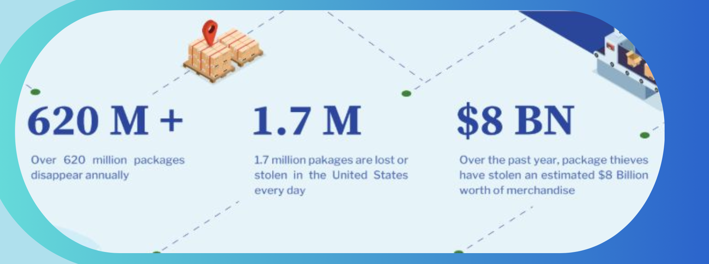
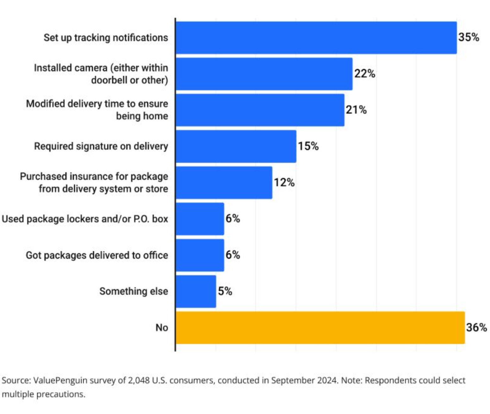
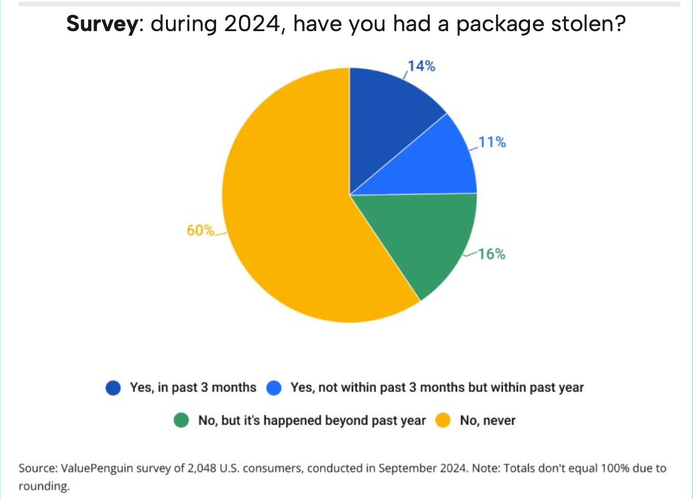
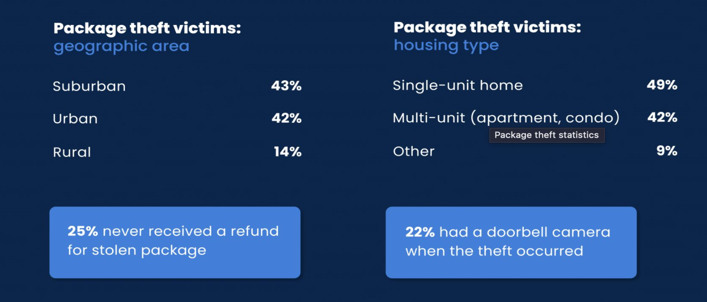
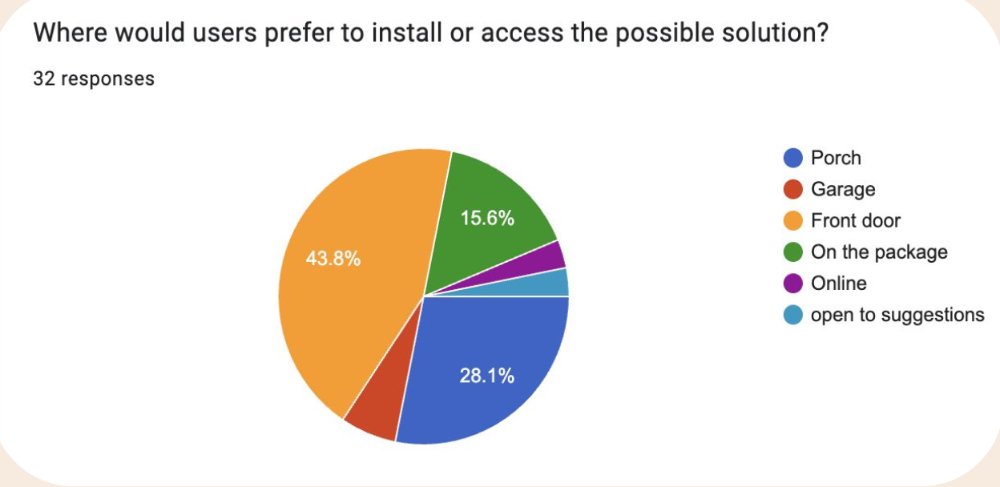

Background Research & Problem Definition
Building the case for a safer way to receive: why porch piracy matters, who it hurts, and what people are asking for.
Problem Definition
Porch piracy has intensified with the growth of online shopping, leaving unattended packages exposed to theft at the doorstep. Existing options—cameras, lockers, and smart locks—do not consistently provide a reliable, secure, and user-friendly way to prevent that loss.
Relevant Statistics
Visual evidence of scale and cost—each figure reinforces why a dedicated secure receiving solution is needed.




Target Market Demographics
- Suburban homeowners: frequently receive packages and often have exposed porches/doorsteps.
- Online shoppers: increased delivery frequency raises exposure and risk.
- Families and working individuals: not home during deliveries, leaving packages unattended longer.
- Renters in multi-unit buildings: shared entryways and public access increase theft risk.
- Time-sensitive deliveries: essentials like medication or work supplies create higher stakes when stolen.
Potential User Survey Results

- High concern about theft: users want prevention, not just proof after the fact.
- Frustration with stolen deliveries: replacing essentials wastes time and money.
- Preference for secure, simple solutions: minimal steps for both owners and delivery drivers.
- Ease of use matters: clear instructions and intuitive interaction are essential.
- Desire for alerts/visibility: users want to know when a package is delivered or tampered with.
- Works for houses and apartments: flexible placement near the front door/porch is preferred.
Why Common Approaches Fall Short
- Cameras (like video doorbells) only record theft and do not prevent it
- Lockers are often limited to apartments and have size restrictions
- Smart locks can be expensive and unreliable without package detection